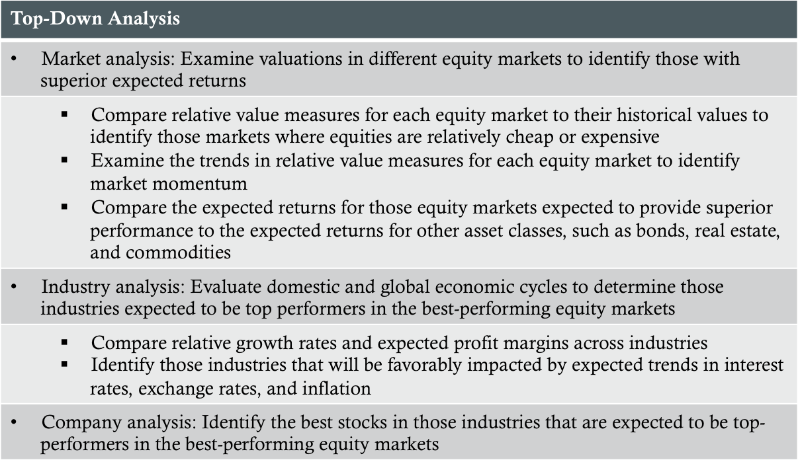
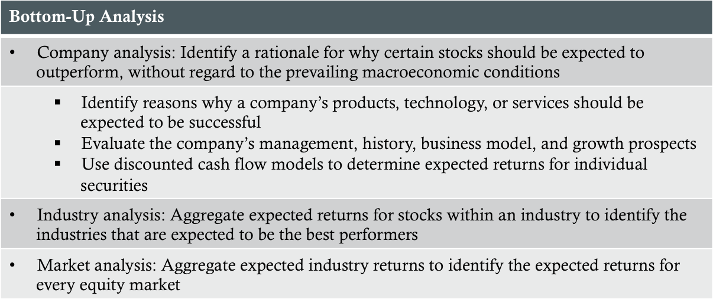

Justified P/E - the estimated intrinsic value (determined using the H-model or another model) divided by the expected earnings over the next year
Top-Down Forecasting

Bottom-Up Forecasting

Relative Value Models
Fed Model
Prediction: The equity market is undervalued if its earnings yield exceeds the yield on government securities
Strengths:
Easy to understand and apply
Consistent with discounted cash flows models that show an inverse relationship between value adn the discount rate
Limitations:
Ignores the equity risk premium
Compares a real variable to a nominal variable
Ignores earnings growth
Yardeni Model
Prediction: Equities are overvalued if the fair value estimate of the earnings yield provided by the model exceeds the actual earnings yield for the market index
Strengths:
Improves on the Fed model by including the yield on risky debt and a measure of expected earnings growth as determinants of value
Limitations:
Risk premium captured by model is largely a default risk premium that does not accurately measure equity risk
Earnings growth forecast not accurate/sustainable
The estimate of fair value assumes the discount factor investors apply to the earnings forecast remains constant over time
P/10-year MA(E)
Prediction: Future equity returns will be higher when ratio is low
Strengths:
Controls for inflation and business cycle effects by using a 10-year moving average of real earnings
Historical data supports an inverse relationship between the ratio and future equity returns
Limitations:
Changes in accounting methods used to determine reported earnings may lead to comparison problems
Current period or other measures of earnings may provide a better estimate for equity prices
Empirically, both high and low levels of the ratio can be persistent
Tobin's q and equity q
Prediction: Future equity returns will be higher when Tobin's q and equity q are low
Strengths:
Both measures relay on a comparison of security values to asset replacement costs; economic theory suggests this relationship is mean-reverting
Historical data supports an inverse relationship between both measures and future equity returns
Limitations:
Difficult to obtain accurate measures of replacement cost for many assets because they lack liquid markets and intangible assets can be difficult to value
Empirically, both high and low levels of Tobin's and equity q can be persistent